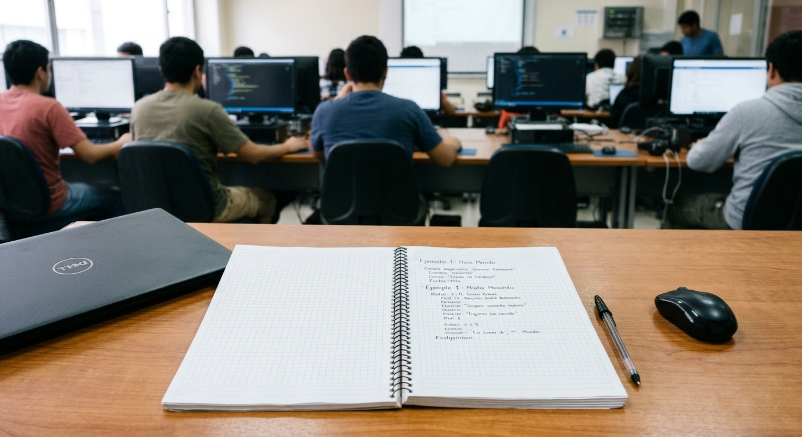
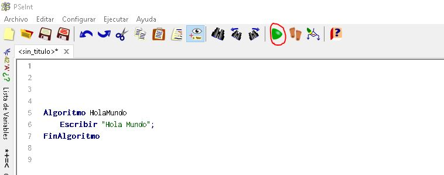

Contexto: qué hice, cuándo y por qué...
Mi situación:
Durante el primer semestre de 2022, en las primeras clases de la materia de Algoritmos, construí mi primer código en PSeInt: mi versión del clásico «hola mundo», un pequeño programa que mostraba mi nombre y mi curso.
El motivo real:
Lo hice porque no sabía qué más hacer. Era mi primera vez trabajando con pseudocódigo y no sabía qué era un editor de código. Además, todavía no entendía realmente qué eran las variables y los contadores.
Desarrollo cronológico
Etapa 1 — Pensando qué hacer en mi primer código
Al comienzo, la profesora nos pidió que escribiéramos lo que sabíamos, pero yo no entendía bien qué debía hacer. Miré a mi alrededor y vi que mis compañeros estaban tan perdidos como yo, mientras que otros estaban jugando en el navegador. Como nadie podía orientarme, tomé una decisión: investigar por mi cuenta qué se suponía que debía hacer.
Etapa 2 — Busqué en YouTube cómo empezar con pseudocódigo
Como no se me ocurría nada, busqué en YouTube un video que explicara cómo empezar a trabajar con pseudocódigo. Gracias al video y a lo que leí sobre la estructura del lenguaje, por fin supe qué escribir: un algoritmo que mostrara mi nombre y mi curso.
Etapa 3 — No podía ejecutar el código en PSeInt
Encontré varios ejercicios de sumas de números enteros y otros ejercicios matemáticos, pero no conseguía resolverlos como esperaba porque no conocía bien el entorno de la aplicación. Finalmente, un compañero me explicó que debía hacer clic en una opción que decía «Ejecutar», identificada con un botón verde. Cuando lo presioné, mi programa se ejecutó por primera vez y vi en la consola mi nombre y mi curso: mi «hola mundo» estaba vivo.
Lo que tenía a la mano y mi poco o nulo conocimiento del tema
Mis herramientas
- La computadora del laboratorio, que por suerte tenía conexión a Internet, el editor de pseudocódigo y las ganas de aprender.
- Tenía PSeInt instalado en la máquina y algunos archivos de práctica del curso de la mañana.
- Abrí YouTube y busqué en Google páginas con ejemplos de ejercicios prácticos, desde los más fáciles hasta los más complicados.
- Tenía un compañero que sabía más del tema porque su profesor le había enseñado durante el curso de preparación.
Estos son los pasos que seguí:
- Leí un poco sobre la estructura del lenguaje y escribí en papel lo que debía hacer el programa.
- Escribí una primera versión completa, aunque no funcionara.
- Probé el programa caso por caso, corregí los errores y conseguí que funcionara.
Una frase que resume mi experiencia
«La experiencia es simplemente el nombre que le damos a nuestros errores.»
La elegí porque mi primera sesión fue exactamente eso: una cadena de errores —no entender la consigna, no saber ejecutar el programa— que terminó convertida en mi primera experiencia real programando.
Registro: lo que observé en mi primera sesión
| Actividad | Momento | Duración aprox. | Dificultad | Resultado | Estado |
|---|---|---|---|---|---|
| Escribir un programa que mostrara mi nombre y mi curso | Primera clase de Algoritmos | ≈ 15 min | No entendía la consigna ni el entorno de PSeInt | Lo escribí primero en papel y luego en el editor | Completado |
| Aprender la estructura del pseudocódigo | Durante esa misma clase | ≈ 20 min | No se me ocurría por dónde empezar | Seguí un video de YouTube y encontré ejercicios de ejemplo | Completado |
| Resolver un ejercicio de suma de enteros | Al final de la sesión | ≈ 10 min | No sabía cómo ejecutar el programa | Lo ejecuté con el botón verde que me mostró un compañero | Completado con ayuda |
Evidencias de mi experiencia
Fotografías propias


Un video similar a los que vi esa clase
Así se resuelve el clásico «hola mundo» paso a paso en PSeInt, con el famoso botón Ejecutar incluido — muy parecido a los videos que busqué esa primera clase.
Aprendizajes
Lo que aprendí...
Ese día aprendí que no debía tener miedo de preguntar a mis compañeros y que podía empezar a descubrir las cosas por mí mismo, mediante la prueba y el error.
Qué haría distinto si lo repitiera
Si tuviera que empezar de nuevo, practicaría en casa antes de la primera clase, aunque fuera con un video, y llevaría mis dudas anotadas para preguntarlas apenas empezara la sesión, en lugar de esperar a perderme.
Contacto
Escríbeme sobre esta bitácora
Este formulario es demostrativo: el navegador valida los campos obligatorios y el formato del correo, pero no envía mensajes reales.